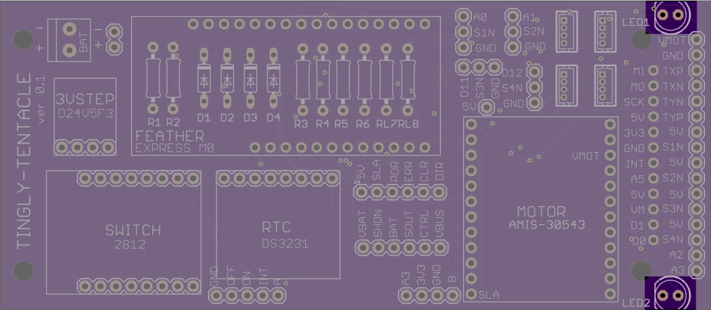

Build documentation for Tingly Tentancle version 0.1. Latest file is the 'mother4.brd' file here.
Place resistors somewhere in the range of 2.2K - 10K.
Place 100K resistors.
These two pins should be connected with a jumper wire. This will connect the input battery to the VMOT pin on the motor shield. NOTE: The input battery must therefore provide an appropriate voltage for the motor shield.
Place 10K resistors.

Place LEDs here. The negative pin for LEDS should be placed on the 'flat' side of the LED symbol.